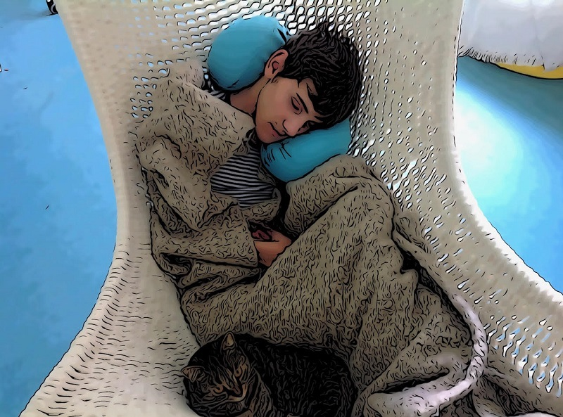

Někde musí být duha
Nevím, kolikrát jsem v noci u Kuby v pokojíčku byla, ale nakonec jsem tam zůstala. Mačkali jsme se tam v jeho modrým autíčku/posteli, co dostal k šestnáctým narozeninám místo řidičáku, než konečně usnul. Kombinace farmakoresistentní epilepsie a spastických bolestivých křečí generuje dost důvodů nespat. Někdy ho bolí nohy a pomáhá, že si spolu sedneme, tak nějak se opíráme o sebe navzájem, než to trochu přejde. Někdy Kubu otáčím na bok a zezadu ho jistím obrovským klínem, aby se hned nepřekulil zpátky. Často potřebuje napít.
Tentokrát jsem se teprve nad ránem odplazila do svý postele. Sotva jsem usnula, záchvat. Kolem osmé mě probudily nějaké esemesky.Vstala jsem a svoje ranní cvičení tentokrát odsunula na neurčito. Doufám, že po kafi se trochu narovnám. Přesunula jsem Jakuba na speciální toaletní židli do kuchyně a vnímala ty drobounké záchvaty, stočení zorniček a nepřítomný pohled, které vpodstatě nekončily a zvažovala aplikaci diazepam desitinu rectálně. Zkusím Kubu nakrmit a pak se rozhodnu.
Je pátek... prší. Prudké změny počasí Kubovi dobře nedělají. Naštěstí alespoň stavbaři naproti přes ulici museli trochu polevit ve stavění nověho domu, což je příjemné, protože je tu alespoň ticho. Všímám si, jak moc se během týdne rozvinuly listy na stromech a v mém výhledu, díky bohu, opět převládá zelená. Ne, ten blázinec za okny mi nechybí...
Švestkový koláč kupodivu Kuba dobře jí. To znamená, že s chutí, ikdyž půlka vypadne vždycky zpět z pusy. Jakubovo spasmus se týká všech svalů po celém těle. Týká se i svalů žvýkacích. Krmit Jakuba je těžké. Je půl jedenácté a my ještě pořád snídáme. Už se stalo pravidelností, že snídáme běžně dvě hodiny. Každé jídlo je takhle dlouhé. Jenomže, já se nechci smířit s tím, aby měl Jakub stravu podávanou přímo do břicha. Je to jedna z mála radostí, dát si do zobáčku něco dobrého.
Při krmení posloucháme podcasty a já se dozvídám z rozhovoru Petra Horkého a Lukáše Totha, že nejistota je něco, na co si člověk nikdy nezvykne. Mohu potvrdit. Dvacet dva let se přizpůsobuji akutním proměnám zdravotního stavu Jakuba. Dívám se na jeho utrpení a snášení bolesti. Denně měním program, přesně podle toho, jaká byla noc. Plánuji a ruším. A víte co? Nezvykla jsem si. Člověk je stvořen k chůzi po zemi, ale tady žádná pevná zem pod nohama není.
Když je Kuba dobrý, plánujeme výlety. Když je Kuba špatný, přemýšlím, co udělám, až tu nebude. Kam se přestěhuju z bezbarierového bytu, z kterého mě vykopnou a co budu dělat na hranici padesátky, po těch letech péče. Nevím. Čím víc jsem unavená, tím víc nevím.
Je půl dvanácté. Kubásek se vyčůral na svůj mobilní záchod, překládám ho na postel, kde se nejdříve slastně protáhne, aby vzápětí začal podřimovat. Dávám mu plenu, oblečení, ale je to díky spasmům, jako zápas juda. Nevyhrávám. Trenér mého života,Jakub, mě ale odměňuje zářivým, pozorným pohledem a zdá se mi lepší, takže diazepam desitin nechám na horší časy. Zato moje v úterý ošetřená a odblokováná záda stávkují. Vyčistíme zuby, viď.
Obstarám další pračku, sušičku, myčku. Pouštím hudbu a nemůžu si pomoci, na chvilku si lehám a usínám takřka okamžitě. Vzápětí mě budí telefon Kubiho asistentky. Stojí pod domem a nemůže se dostat dovnitř. Máme zase poškozený zámek. Napadá mě rčení Karlínu a Libni zdaleka se vyhni a mrzí mě to. Karlín se posunul, lepší zítřky horní Libeň teprve čekají. Není to příjemné. Žít s vypáčenými zámky a věčně vykradenými sklepy. Není příjemné jít s vozíkem na autobus po silnici, protože na chodník se díky obrovským obrubníkům s električákem vůbec nedostaneme. To bezbarierové sídliště je tu šestnáct let. Šestnáct let provizoria a nedodělků. Šestnáct let na stavbě. Naproti, zleva, zprava i zezadu. Žádná infrastuktura, žádný obchod. Bez auta si tady nikdo neškrtne.
Bolí mi všechny svaly a hlavně paže, cítím uzliny v krku. Jsem smutná, když mi není fyzicky dobře. Na mém zdravotním stavu totiž visí celá naše společná existence.
Jedeme s Kubou a asistentkou autem na Prosek. Je tam obchod, lékárna a park na rovině. Vozík s Kubou má přes šedesát kilo a to je někdy víc, než má asistentka. Jsem ráda, když se mi opakovaně vrací a tak jim neztěžuji život víc, než je nezbytně nutné. Je tedy vyhazuji v parku, Kubáskovi ještě kupuji cheesburger. Má ho moc rád a dobře se mu jí. Zkuste to sníst někde na lavičce, říkám a moc šancí tomu nedávám. Kuba od nových lidí nerad jí. Mám hodinu a půl pro sebe.
V lékárně kupuji objednané easylaxy, dětské šetrné projímadlo. Měli výpadek od prosince a nám to dost zkomplikovalo Jakubovo vyprazdňování, tak jsem šťastná, že konečně jsou. A taky nutridrinky a pudinky bratru za osmnáct stovek... Kubáskovi se špatně jí a musíme to nějak dohánět. Vracím se domů a vidím před sebou v údolí v centru obrovskou průtrž mračen. Mám strach o ty dva venku a tak se telefonicky domlouváme s asitentkou, že pro ně přjedu k autobusu. Snad si stihnu uvařit alespoň tuareg. Zelený čaj s marockou mátou nana. Je to nakopávák a antivirák . Měla bych se vrhnout na grant na Jakubovo rehabilitaci, měla bych. Ale mám k tomu bytostný odpor. Jsem opravdu unavená z toho, co stále znovu musím dokládat, ofocovat, skenovat, celé ty roky a stále dokola.
Skáču do našeho dvanáct let starého auta, jedu k autobusu pro ty dva a na pankáče na čtyřech blikačkách ho nakládáme přímo v silnici, asistentku pouštím domů. Kuba září spokojeností, není totiž z papíru a prochajda, park, cheesburger a déšt, je přeci jen vo moc lepší než postel a bílý strop nad ním 24 hodin a 365 dnů v roce. Kuba je sice čistý ležák tělem, ale dobrodruh duší. A zase ten zátřivý úsměv a oči bezmocného člověka plného života a po životě toužícího.
A zase ten zápas při svlékání spastika, bunda je nejen mokrá, ale taky poslintaná na hrudníku, stejně jako nákrčník, který je úplně mokrý, takže obojí hážu do špinavého prádla a kubu do vany.
Je po dešti, nádherně svítí slunce. Někde musí být duha... Pračka hlasitě hlásí po dvanácti letech vymlácená ložiska a já uvažuji, že všechna naše bílá technika je takhle stará a nutně potřebuje obnovit. Vzala bych si na to klidně půjčku, ale nemám na ní jako pečující nárok. Nemám totiž žádný příjem.
Když on line a na poslední chvíli vyplňuji formulář sčítání lidu, kolonka pečující o osobu blízkou tam úplně chybí. Cože tam mám napsat? Ptám se on line podpory. A odpověď je “osoba pečujíci o osobu blízkou uvede variantu “S jiným vlastním zdrojem obživy/příjmů než výše uvedené.”
Tímto mi konečně dochází, že starat se o těžce tělesně postiźeného člověka v domácím prostŕedí, je evidentně luxus, který si může dovolit jen jinak zabezpečený člověk. My ostatní neexistujeme a po novém sčítání dál existovat nebudeme. Nevadí Kubi, mě v takový společnosti stejně nebaví žít. Jsem s Tebou ráda, protože snižovat Tvoje utrpení mi pořád dává větší smysl, než například mobilní covidová nepoužitá nemocnice v Letňanech za šedesát milionů. A víš co? To rádio taky vypnu. Ač se to nezdá, nejsem masochista. Jsem jenom člověk, který tě neobětoval v zájmu svého vlastního pohodlí. Vím, že každému člověku, nemocné nevyjímaje, dávají hluboký životní smysl vztahy. To, že Vás má někdo rád. Že na Vás někomu záleží. A to,že náš stát má jiné priority, není naše ostuda.